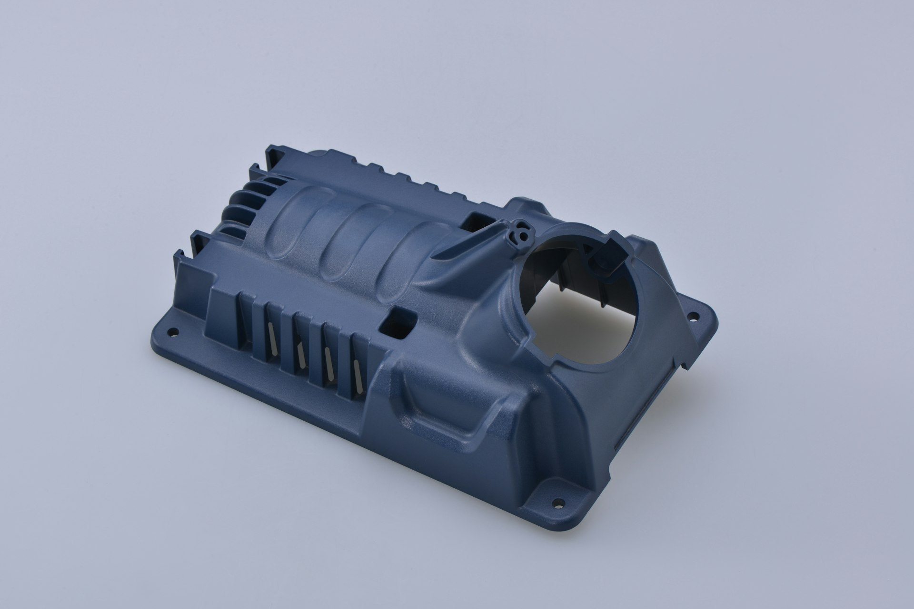
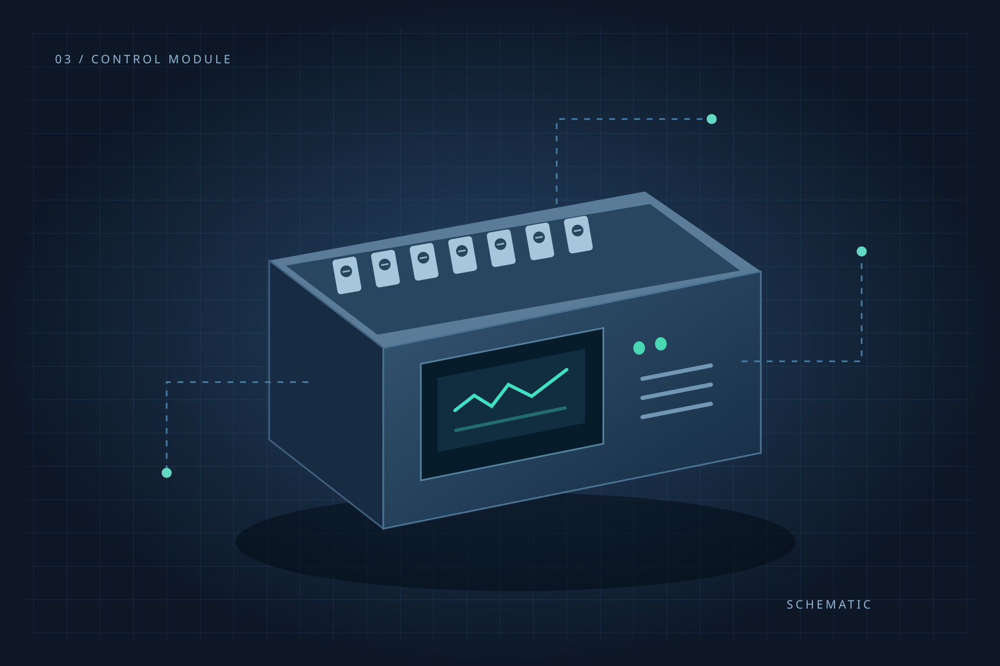

Продукт · интерфейс · прототипТри задачи.
Три задачи.
Три пути к заявке.
Как объяснить техническую услугу человеку, которому нужен результат? Три сценария — от замены детали до небольшой серии. Откройте страницы, сравните подходы и попробуйте форму.

01PlastFactory / по образцуДеталь, которую
Деталь, которую
нужно заменить
От образца и условий работы до понятного описания задачи.
Открыть сценарий
 02
02SilikonForms / пилотная партияПроверить продукт
Проверить продукт
малой серией
Материал, тираж и маршрут изготовления перед масштабированием.
Открыть сценарий

03TechProto3D / инженерная задачаОт идеи
От идеи
до рабочего прототипа
Требования, ограничения и выбор технологии для конкретной функции.
Открыть сценарий